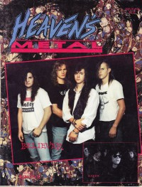
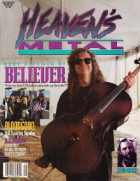

Believer
|  |
| February 1991 Heaven's Metal |
 |
| July 1993 Heaven's Metal |
 |
| February 2009 Heaven's Metal |
Media coverage:
- Apr 1988 in Heaven's Metal "Thrash Metal: The Need For Speed", by Doug Van Pelt
- Apr 1990 in Heaven's Metal "Thrashing About With Believer", by Doug Van Pelt
- Feb 1991 in Heaven's Metal "Getting Insane With Believer", by Doug Van Pelt
- Feb 1991 in Heaven's Metal "Poster: Believer"
- May 1991 in Harvest Rock Syndicate "Metal Shop: A Thrash In Time Saves Nine", by Kevin Allison
- Jun 1991 in Heaven's Metal "Concert Review: Liberty Lunch", by Stephen Wagers
- May 1992 in Heaven's Metal "Road Racing With Believer", by Doug Van Pelt
- Jul 1993 in Heaven's Metal "Getting 2-Dimensional With Believer", by David A. Jenison
- Mar 1994 in Heaven's Metal "Catching Up With Believer", by Doug Van Pelt
- Aug 2003 in Nor'Easter "Fountain of Tears Part II: Whatever Happened to... Sardonyx, Sacrament, and Believer?"
- Feb 2009 in Heaven's Metal "Anticipation ... It's Made Us Wait", by Chris Beck
- Feb 2009 in Heaven's Metal "Why Believer Are The Best Christian Metal Band Ever", by Lloyd Harp
- Mar 2009 in HM "Believer", by Chris Gatto
- Oct 2009 in Heaven's Metal "The Road Blog: Allentown, PA", by Chris Gatto
Albums & reviews:
1988: The Return
- Mar 1988 in Heaven's Metal, by Paul Q-Pek
- Jul 1989 in CCM, by Doug Van Pelt
- Jul 1989 in Heaven's Metal, by Doug Van Pelt
- Win 1989 in Harvest Rock Syndicate, by Kevin Allison
- Jan 1991 in Harvest Rock Syndicate, by Kevin Allison
- Feb 1991 in CCM, by Doug Van Pelt
- 1991 in Cornerstone, by Jon Trott
- Apr 1991 in Heaven's Metal, by Spiny Norman
- Dec 2004 in Heaven's Metal, by Matt Morrow
- Fall 1993 in True Tunes News, by Billy Knudsen
- Nov 1993 in Heaven's Metal, by Doug Van Pelt
- Jan 1994 in The Lighthouse, by Erik Sellin
- 1994 in Cornerstone, by David Canfield
- Dec 2003 in Nor'Easter, by Neal Piwowarski
- May 1993 in Heaven's Metal, by Doug Van Pelt
- Mar 2009 in HM, by Chris Beck
- Apr 2009 in Heaven's Metal, by Jeff McCormack
Award Summary (Nominations / Wins)
Dove Awards- 1994 Dove Awards
- Metal Album: Dimensions
Books about Believer
- "0303 Believer (PA)" in Headbangers: The Worldwide Mega-Book of Heavy Metal (Mark Hale, 1993)
- "Believer" in The Encyclopedia of Contemporary Christian Music (Mark Allan Powell, 2002)

© 2011 CMnexus. Last updated September 2019. Contact: editor -AT- cmnexus -DØT- org About